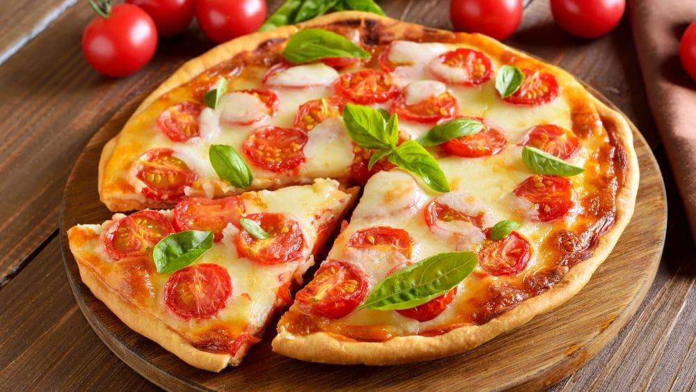

Pizza Recipe

Description
Pizza is one of the most famous dishes worldwide. I find it one of the easiest dishes to make.
You can choose your favourite topping. Here we will describe how to prepare a capresse pizza.
Ingredients
For the dough
- 1 kg. of 0000 flour
- 6 tablespoons of your preferred oil (I normally use sunflower)
- Salt to taste (I use 1 tablespoon)
- Around 400 ml of warm water
- 5 grs. of fresh yeast
- 1 teaspoon of sugar
For the topping
- Tomato puree
- 500 grs. of cheese
- 500 grs. of cherry tomatoes
- Two basil plants
- Garlic to taste
- (Optional) Parmesan cheese
Steps
- We'll prepare the yeast first. In a soup bowl, put all the yeast and the sugar. Mix it with a teaspoon of flour. Then add three tablespoons of warm water. Cover the bowl with a plate and reserve.
- In a big bowl, pour all the remaining flour and salt to taste. Mix it thoroughly.
- Make a hole in the middle of the flour and pour the warm water and the oil. Wait until the yeast has grown three times its original size, then put it in the hole.
- Mix it, then knead it. Cover it with a kitchen towel and reserve for 20 minutes, somewhere warm.
- Separe the dough into 4 equal parts, cover again for 10 minutes. Turn on the oven.
- 5 minutes later, spread 1/4 of the cheese over it. Cut the tomatoes into slices and throw them over the cheese. Put it in the oven.
- When the cheese has melted, take the baking dish out and throw some basil leaves over it. Grate some parmesan cheese over it, and serve.
- Repeat 6 and 7 for the remaining dough. You can also freeze the raw dough to consume it later.